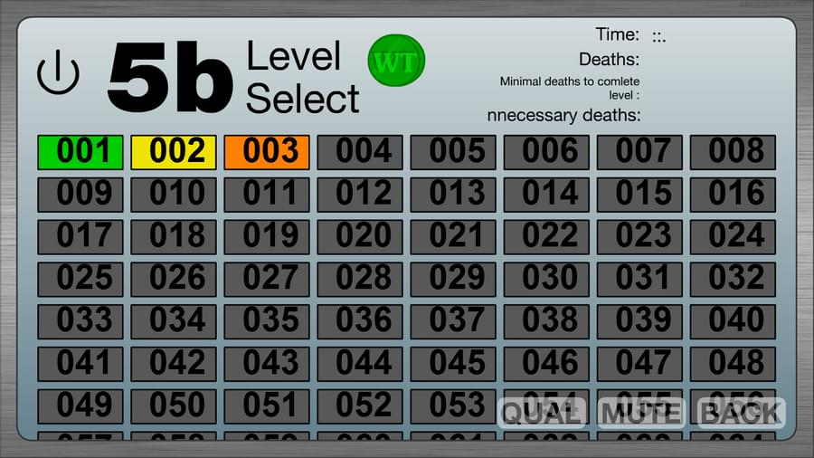

Basically, if you've seen my post on GameJolt, you know what's going on.
To sum it up, I screwed up big time. I'm honestly not sure what I did but I know what I should've done.
About 2 weeks ago, I tried to make these changes on 5b and that same thing happened. I used my backup from before I made any changes and I started over.
For some reason, I decided not to work on 5b and started the Game Thing project.
On Friday (Ooctober 16), I continued making 5b. When I started working, I constantly checked the text on the level map. But then I stopped checking every time. And then I just stopped checking. I think that I know what I'm doing wrong but I'm not sure.